Background¶
Laplacian-based approaches represent the surface by the so-called differential coordinates or Laplacian coordinates [3], [59]. These coordinates are obtained by applying the Laplacian operator to the mesh vertices:
where is the mean curvature ( 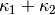 ) at the
vertex  .
.
The deformation can be formulated by minimizing the difference from the input surface coordinates 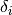. With a continuous formulation, this would lead to the minimization of the following energy:
The Euler-Lagrange equation derived:
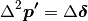
When considering the input surface as the parameter domain, the Laplace operator turns out into the Laplace-Beltrami operator :
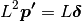
which can be separated into 3 coordinate components. Then users can add positional constraints on some vertices:
Note that the positional constraints can either be incorporated as hard or soft constraints.
Adding constraints¶
Hard constraints formulation¶
The problem can thus be expressed as follows:

where 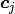 are the positional constraints, or by constraining the displacement 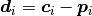.
which can be rewritten as:
where and is the  identity matrix. By eliminating rows in the above linear system, we
finally get a sparse linear system where the unknown
vector represents the 3D deformation of the 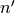 unconstrained vertices.
identity matrix. By eliminating rows in the above linear system, we
finally get a sparse linear system where the unknown
vector represents the 3D deformation of the 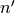 unconstrained vertices.
Soft constraints formulation¶
In contrast soft constraints correspond to relax the previous constraint by incorporating the constraints into the enyergy minimization leading to
The minimum of this energy is can be found by solving the normal equations:
![\left[
L^t \cdot L + \lambda^2 \cdot
\left(
\begin{matrix}
0 & 0 \\
0 & I_k
\end{matrix}
\right)
\right]
\cdot
\left(
\begin{matrix}
\boldsymbol{p}_1 \\
\vdots \\
\boldsymbol{p}_n
\end{matrix}
\right)
=
L^t \cdot
\left(
\begin{matrix}
\boldsymbol{\delta'}_0 \\
\vdots \\
\boldsymbol{\delta'}_n
\end{matrix}
\right)
+ \lambda^2 \cdot
\left(
\begin{matrix}
\boldsymbol{0} \\
\vdots \\
\boldsymbol{0} \\
\boldsymbol{c}_{n'+1} \\
\vdots \\
\boldsymbol{c}_n
\end{matrix}
\right)](_images/math/293425fe5226579c09a468b64e41199b565dc6d4.png)
Depending on  solution can be closed to an interpolation of the
constraints (with large values), or an approximation of them (with low values).
solution can be closed to an interpolation of the
constraints (with large values), or an approximation of them (with low values).
Laplacian discretization¶
This approach requires a dicretization of the Laplacian operator, and results would highly depends on it. There exists several variations of the weights used in the typically used Laplacian discretization. Here we list few of them:
- The uniform weight: and ;
 and 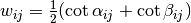;
and 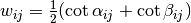;- 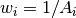 and (where
 is a local area corresponding for )
is a local area corresponding for )